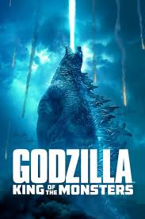

IMDb Pro Watch list Sign In
IMDb Pro Watch list Sign In

.png)
PG-13 | 2h 12min | Action, Adventure, Fantasy | 31 May 2019 (USA)
Godzilla: King of the Monsters[a] is a 2019 American monster film directed by Michael Dougherty and co-written by Dougherty and Zach Shields from a story by Max Borenstein, Dougherty, and Shields. A sequel to Godzilla (2014), it is the 35th film in the Godzilla franchise, the third film in Legendary's MonsterVerse, and the third Godzilla film to be completely produced by a Hollywood studio.[b]
The film stars Kyle Chandler, Vera Farmiga, Millie Bobby Brown, Bradley Whitford, Sally Hawkins, Charles Dance, Thomas Middleditch, Aisha Hinds, O'Shea Jackson Jr., David Strathairn, Ken Watanabe, and Zhang Ziyi. It is dedicated to executive producer Yoshimitsu Banno and original Godzilla suit performer Haruo Nakajima, who both died in 2017. In the film, humans must rely on Godzilla and Mothra to defeat King Ghidorah and Rodan, the former which has awakened other Titans to destroy the world.
The sequel was green-lit during the opening weekend of Godzilla, with original director Gareth Edwards expected to return. In May 2016, Edwards left the project. In October 2016, Dougherty and Shields were hired to rewrite the script. In January 2017, Dougherty was announced as the director. Principal photography began in June 2017 in Atlanta, Georgia, and wrapped in September 2017.
Godzilla: King of the Monsters was theatrically released on May 31, 2019, to mixed reviews, with praise for the visual effects, action sequences, cinematography, and musical score but criticism aimed at the pacing, tone, story, and characters.[9][10] The film was a box office disappointment, grossing $385 million worldwide against a production budget between $170–200 million.[2][11][12] A sequel, Godzilla vs. Kong, is scheduled for release on November 20, 2020.
Godzilla: King of the Monsters grossed $110.5 million in the United States and Canada, and $275.4 million in other territories, for a worldwide total of $385.9 million.[5] Entertainment Weekly, Deadline Hollywood and Box Office Mojo reported that the film's production budget was $170 million, however, Deadline also noted that other analysts marked the budget at $185 million.[2][5][158] Variety reported that the film's production budget was $200 million.[3] Erik Childress from Rotten Tomatoes estimated that the film would have needed to gross $550–600 million in order to break-even.
In the United States and Canada, the film was released alongside Rocketman and Ma, and was projected to gross $55–65 million from 4,108 theaters in its opening weekend.[160] The film made $19.6 million on its first day, including $6.3 million from Thursday night previews, which was lower than the $9.3 million made by the 2014 film but more than Kong: Skull Island's $3.7 million. It went on to debut to $47.8 million, finishing first at the weekend box office but below expectations.[161] Deadline Hollywood said the film "lacked urgency," having debuted its first trailer over a year before the film's release, and not separating its appearance from previous Godzilla films.[158] The film fell 67% in its second weekend to $15.5 million, finishing in fourth,[162] and then to $8.1 million the following weekend, finishing seventh.
Worldwide, the film was initially projected to earn around $180 million from 75 other territories in its opening weekend, for a global total of $230–235 million. It was speculated that the amount could go higher if the film over-performed in China, where it was projected to debut to $75–90 million. The film held early previews in China on May 25, 2019, where it grossed $2.5 million.[164] King of the Monsters made $12.7 million from 51 countries on Thursday and $31.4 million from 75 countries on Friday, for a cume of $48.2 million through Friday. In China, the film grossed $54.15 million through Friday and Saturday.[166] The film ended up grossing a total of $130 million internationally and $177.8 million including North American tallies, far below projections. Its largest markets were China ($70 million), the United Kingdom ($4.4 million), France ($2.6 million) and South Korea ($2.2 million).[165] The film dropped 64% to $47.1 million in its second weekend of international play, for a 10-day running total of $213.7 million.
Click here to go back..